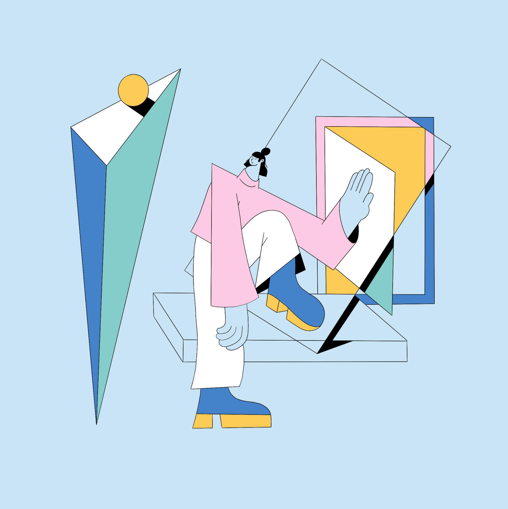

Linn Fritz
Linn Fritz lives and works in London where she creates charmingly clean, precise imagery in a trademark pastel palette

Xoana trained as a graphic designer in Argentina but over time found herself drawn to the world of illustration
The progressive nature of Hyper Island led Linn to abandon pen and paper and concentrate on what digital could offer her
Linn is the co-founder of Panimation, “a community of equality-driven women, trans and non-binary friends that support each other”